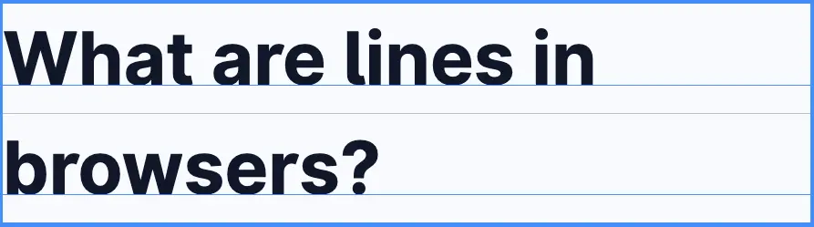

TIL: 移除图片下方多余的空白
問題和原因
<div style="border: 2px solid;">
<img src="/images/album/20251226T172918--梦想家-the-dreamer__20241018_khalilfong_albumwall_image_方大同.webp" />
</div>

留意上面的图片， div 里只有一个 img 元素，但 img 没有占滿 div ，在 img 下面还空了些許高度。
這是因為 img 是行內元素，行內元素的特性是：
- 行内元素按行布局
- 每行都有一个基线 (baseline)
- 基线由字体决定
- 默认情况下，所有行内元素都与基线对齐
{kind=link}

从上面的图可以看到，行内元素默认与基线对齐，而基线和行的底部还留有一些空間，這个空間是留给像是 g、j、p、y 等笔划会延展到基线下的字符的。
图片也是行內元素，自身没有基线，默认与文字的基线對齐，也就同樣在基线下保留一些空間。
解决方案
在当前场景下我并不想要這点多余的空白，可以通過以下方法解决：
1.將图片設為 display: block; ，变成块级元素，不再是行內元素，也就不受基线影响
<div style="border: 2px solid;">
<img style="display:block;" src="/images/album/20251226T172918--梦想家-the-dreamer__20241018_khalilfong_albumwall_image_方大同.webp" />
</div>
2.給图片容器設置 line-height: 0; ，行高為 0，基线底部也不存在高度
<div style="border: 2px solid; line-height: 0;">
<img src="/images/album/20251226T172918--梦想家-the-dreamer__20241018_khalilfong_albumwall_image_方大同.webp" />
</div>
3.給图片設置 vertical-align: top; /* or bottom */ ，不和基线对齐，和行的上下边䧘对齐
<div style="border: 2px solid;">
<img style="vertical-align: top;" src="/images/album/20251226T172918--梦想家-the-dreamer__20241018_khalilfong_albumwall_image_方大同.webp" />
</div>
你可以基于使用场景选择合适的方案，我一般会用 vertical-align: top; ，应该是其中副作用最小的。
Bonus: 制作一个歌詞卡片
I framed your picture on my wall
说过的话 美丽的夏 都过完了
I didn’t know that I would fall
都忘了吧 说不需挂 回忆放下
生活里种种的平凡
现实总会让人心烦
话语中常会带 许多的批判
往往脱口而出的交流带来遗憾
Well it’s useless to say
Anymore
It’s ok
Anyway
You’ll give up
I’ll let down
That’s the way it should go
Oh my love I could want you to stay
But the truth’s telling me
That there’s nothing here left to say
I framed your picture on my wall
说过的话 美丽的夏 都过完了
I didn’t know that I would fall
都忘了吧 说不需挂 回忆放下
没有最完美的选择
缘份自有它的原则
恋爱的对话中 有多少决策
做好了决定 狠心 但总算有解了
Well it’s useless to say
Anymore
It’s ok
Anyway
You’ll give up
I’ll let down
That’s the way it should go
Oh my love I could want you to stay
But the truth’s telling me
That there’s nothing here left to say
I think we’ve said it all
I think we’ve said it…all…all
Doo doo doo doo doo doo
Well it’s useless to say
Anymore
It’s ok
Anyway
You’ll give up
I’ll let down
That’s the way it should go
Oh my love I could want you to stay
But the truth’s telling me
That there’s nothing here left to
实現代碼
<div class="card">
<img class="cover" src="/images/album/20251226T172918--梦想家-the-dreamer__20241018_khalilfong_albumwall_image_方大同.webp" />
<p class="lyrics">
I framed your picture on my wall<br/>
说过的话 美丽的夏 都过完了<br/>
I didn’t know that I would fall<br/>
都忘了吧 说不需挂 回忆放下<br/>
生活里种种的平凡<br/>
现实总会让人心烦<br/>
话语中常会带 许多的批判<br/>
往往脱口而出的交流带来遗憾<br/>
Well it’s useless to say<br/>
Anymore<br/>
It’s ok<br/>
Anyway<br/>
You’ll give up<br/>
I’ll let down<br/>
That’s the way it should go<br/>
Oh my love I could want you to stay<br/>
But the truth’s telling me<br/>
That there’s nothing here left to say<br/>
I framed your picture on my wall<br/>
说过的话 美丽的夏 都过完了<br/>
I didn’t know that I would fall<br/>
都忘了吧 说不需挂 回忆放下<br/>
没有最完美的选择<br/>
缘份自有它的原则<br/>
恋爱的对话中 有多少决策<br/>
做好了决定 狠心 但总算有解了<br/>
Well it’s useless to say<br/>
Anymore<br/>
It’s ok<br/>
Anyway<br/>
You’ll give up<br/>
I’ll let down<br/>
That’s the way it should go<br/>
Oh my love I could want you to stay<br/>
But the truth’s telling me<br/>
That there’s nothing here left to say<br/>
I think we’ve said it all<br/>
I think we’ve said it…all…all<br/>
Doo doo doo doo doo doo<br/>
Well it’s useless to say<br/>
Anymore<br/>
It’s ok<br/>
Anyway<br/>
You’ll give up<br/>
I’ll let down<br/>
That’s the way it should go<br/>
Oh my love I could want you to stay<br/>
But the truth’s telling me<br/>
That there’s nothing here left to<br/>
</p>
</div>
.card {
position: relative;
border-radius: 5px;
overflow: hidden;
/* 移除图片下多余空白，lyrics 設置 height: 100%; 才刚好是 cover 的高度 */
.cover {
vertical-align: top;
}
.lyrics {
box-sizing: border-box;
position: absolute;
inset-block-start: 0;
inset-inline-start: 0;
/* 让歌詞和封面等高，超出則滾動歌詞 */
height: 100%;
overflow: auto;
margin: 0;
border: 0;
border-radius: 10px;
/* 顏色要基于封面調整 */
color: #328c7c;
/* 增加一个半透明背景可以让歌詞清晰一些的同時也好看 */
background: linear-gradient(to left, transparent, oklch(from #d4da98 l c h / .5));
/* 隐藏滾動条，好看些 */
scrollbar-width: none;
padding-block: 2rem;
padding-inline: 1rem;
/* 給上下边缘遮罩，模糊上下边缘 */
mask-image: linear-gradient(
to bottom,
transparent 0%,
black 20%,
black 80,
transparent 100%
);
-webkit-mask-image: linear-gradient(
to bottom,
transparent 0%,
black 20%,
black 80%,
transparent 100%
);
}
}